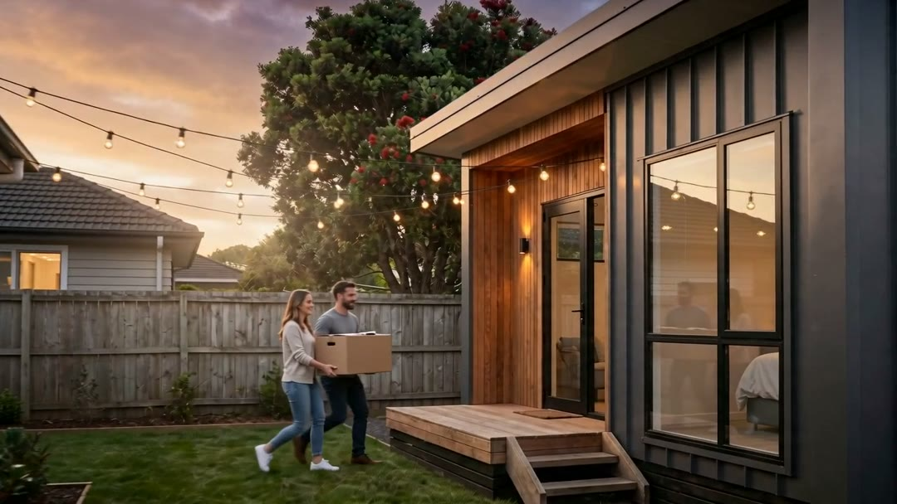

Granny flats · Portable homes
Managed build · For homeowners
A granny flat with no main contractor's margin on top.
We tender every trade and supplier, manage the site and keep the paperwork. We work for you, the way a quantity surveyor would on their own place.

Illustrative
- Bring us any quote. We'll beat it on the same specification, or tell you exactly why we can't.
- Check the section first. Sign up, search your address and see what your site would require, including the granny-flat conditions and whether a cross-lease gives next door a say.
- One priced schedule. Every trade and supplier prices the same lines. You see the totals, excl. and incl. GST, and choose.
- We run the site. Programme, QR sign-in, daily log with photos, milestones paid only on proof of work.
- Portable homes too. Built on site or craned in: same checks, same schedule, same record for council and the bank.
Start with your address, then ask for a managed build.
hello@qsme.co.nz · +64 9 920 8896
Sign up at qsme.co.nz
Up to 70 m² without a building consent applies only where a site meets the conditions (since 15 January 2026, building.govt.nz). Site research is indicative, not a LIM, title search or planning advice. Photo illustrative.